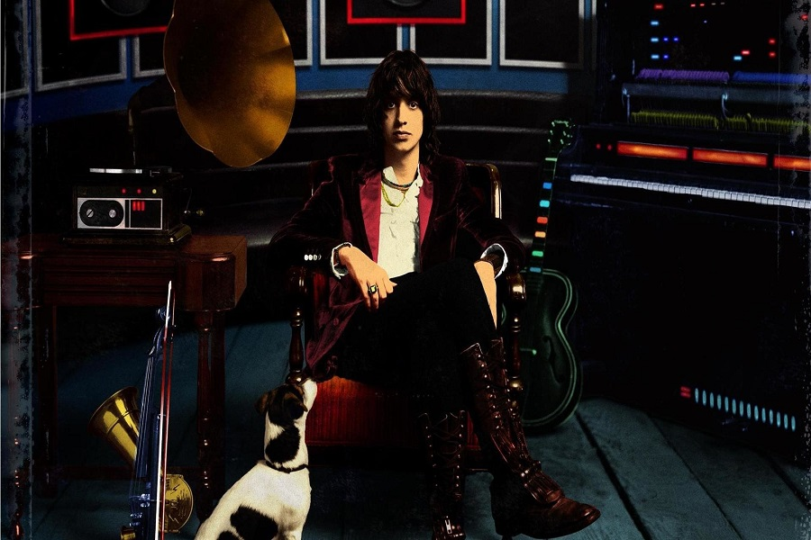
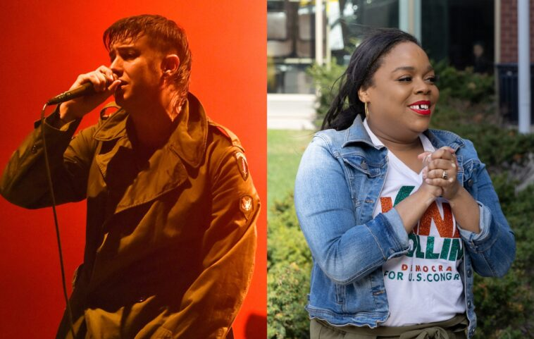
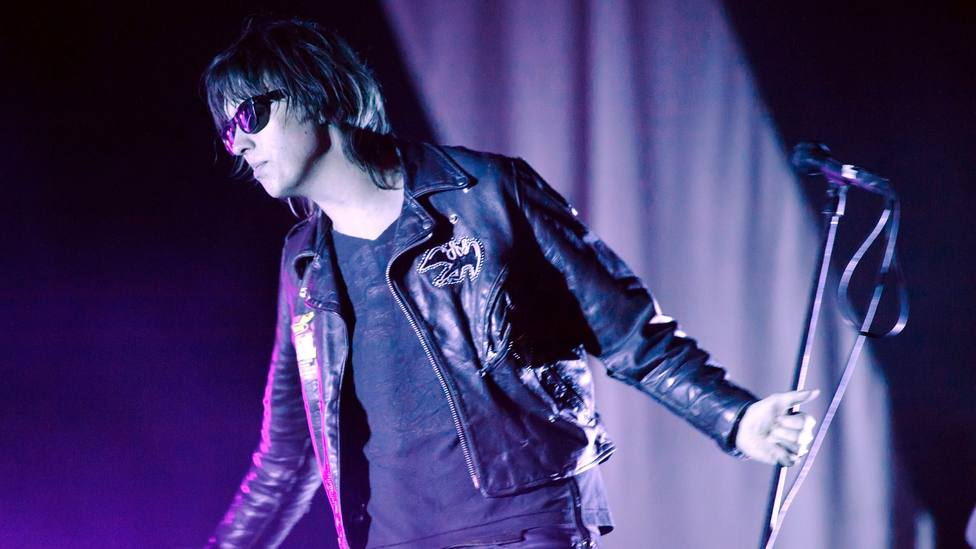

Todas las noticias

Julian vende una parte correspondiente a sus participaciones en The Strokes.
Leer más
Tame Impala realiza un cover de la iconica canción "Last Nite".
Leer más

The Strokes realizo un show en apoyo a la candidata al congreso Kina Collins.
Leer más
El mensaje de Julian Casablancas de The Strokes a Petro
Leer más

The Strokes vuelven a tocar uno de sus clásicos más famosos 6 años después: lo estabas esperando
Leer más
The Strokes: La canción que Julian Casablancas escribió en un sueño
Leer más